(タスク) Image Denoise (デノイズ / ノイズ除去)
何ものか？
画像に混入してしまったノイズを取り除き、本来の綺麗な画像（クリーン画像）を復元・推定するタスクのこと
平均 0 のノイズは、平均を取ると 0 になる (あたりまえ・・・だけど、それでノイズを除去できる(こともある))
動きの無いシーンに平均 0 のノイズが乗った画像が多数取得できるような状況を考える。
受け取った画像を平均することで、どの画像よりもノイズが少ない、クリーンな画像が得られる。
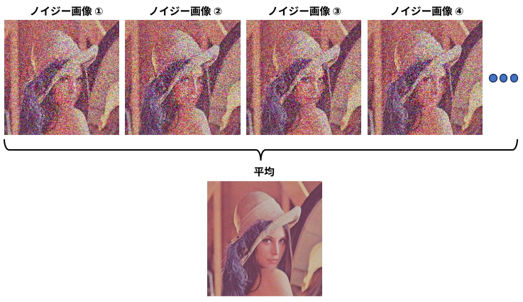
・data/task_image_denoise/src/add_gaussian_noise.py (画像ファイル) (ノイズレベル) (作成枚数)
でノイジー画像を 100 枚作成し
・data/task_image_denoise/src/average_images.py *_noisy*.png
でノイジー画像の平均画像を作成した。
ノイズを含んだ画像を n 枚足し合わせると、真の値は n 倍になるが、ノイズは増えない。
∵ 平均 0 のノイズだから･･･
\[
\begin{array}{c c c c}
& \text{真の値} & +& \text{ノイズ(1)} \\
& \text{真の値} & + & \text{ノイズ(2)} \\
& & : & \\
+) & \text{真の値} &+& \text{ノイズ(n)} \\
\hline
& \text{（真の値)×n} &+& \text{ノイズ(1)+ノイズ(2)+・・・+ノイズ(n)}
\end{array}
\]
平均をとると
\[
\frac{\text{(真の値)}×\cancel{n}}{\cancel{n}} + \underbrace{\frac{\text{ノイズ(1)+ノイズ(2)+・・・+ノイズ(n)}}{n}}_{ノイズの平均に近づく → 0} \simeq \text{真の値}
\]
となる。
画像が 1 枚の場合や、動きのあるシーンの場合
上のような状況は実際には少なく、
・ 1 枚の画像からノイズを除去する ( Single Image Denoising )
・ 動きのある映像からノイズを除去する ( Video Denoising )
などが求められる。
この場合、平均をとるピクセルをどうやって決めるか？
テキトーにピクセルを集めて
\[
\begin{array}{c c c c}
& \text{真の値A} & +& \text{ノイズ(1)} \\
& \text{真の値A} & + & \text{ノイズ(2)} \\
& & : & \\
& \text{真の値B} & + & \text{ノイズ(n-1)} \\
+) & \text{真の値B} &+& \text{ノイズ(n)} \\
\hline
& \text{（真の値A)×}n_A+\text{(真の値B)×}n_B+･･･ &+& \text{ノイズ(1)+ノイズ(2)+・・・+ノイズ(n)}
\end{array}
\]
平均をとると
\[
\underbrace{\text{(真の値A)×}\frac{n_A}{n}+\text{(真の値B)×}\frac{n_B}{n}+・・・ }_{\text{色々な(真の値)をブレンドしたものになる → ぼける}}+ \underbrace{\frac{\text{ノイズ(1)+ノイズ(2)+・・・+ノイズ(n)}}{n}}_{ノイズの平均に近づく → 0} \neq \text{真の値}
\]
となる。
平均を取ることでノイズを除去するためには、『真の値』が同じピクセルを推定する 必要がある。
手法
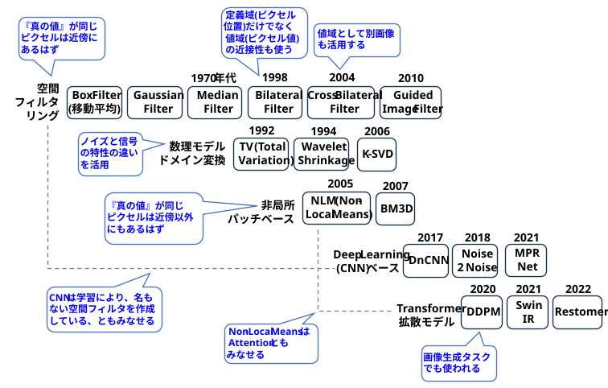
-
空間フィルタリング
入力画像とカーネル (光学系のインパルス応答) を畳み込むことで、光学系をシミュレートする手法。
カーネルの係数が正のみの場合、近傍ピクセルの加重平均 (微分成分が無く積分のみ)となり、デノイズとして使える。
カーネルサイズ3×3の場合の空間フィルタ
-
Box フィルタ (ミーン・フィルタ、移動平均)
近傍ピクセルの単純な平均をとる。
カーネルサイズ3×3の場合のBOXフィルタ
Box フィルタは線形分離可能なので、「(1×n の) 水平方向のフィルタ処理」→「(n×1 の) 垂直方向のフィルタ処理」と2回実施することで計算量を減らすことができる (\(n^2\) 回の演算 → \(2n\) 回の演算)
お試しコード
・data/task_image_denoise/src/denoise_by_box_filter.py
・第一引数：ノイジー画像へのパス
・第二引数：フィルターサイズ (オプション。デフォルトは3)
・sキー押下で結果画像を保存～終了。それ以外のキー押下で保存せずに終了
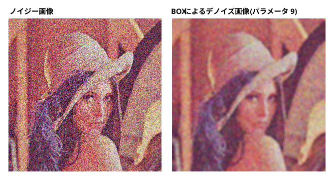
-
ガウシアン・フィルタ
近傍ピクセルを単純に平均すると、ぼけが大きくなるので、距離に応じた重み (ガウス関数値) を掛けて平均を取る。
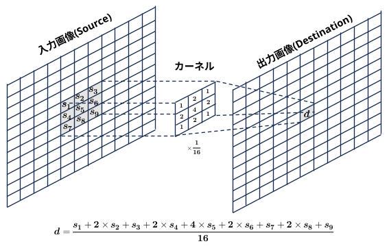
カーネルサイズ3×3の場合のガウシアン・フィルタ
ガウシアン・フィルタも線形分離可能なので、「(1×n の) 水平方向のフィルタ処理」→「(n×1 の) 垂直方向のフィルタ処理」と2回実施することで計算量を減らすことができる (\(n^2\) 回の演算 → \(2n\) 回の演算)
お試しコード
・data/task_image_denoise/src/denoise_by_gaussian_filter.py
・第一引数：ノイジー画像へのパス
・第二引数：フィルターサイズ (オプション。デフォルトは3)
・sキー押下で結果画像を保存～終了。それ以外のキー押下で保存せずに終了
-
メディアン・フィルタ
近傍内に大きいノイズがあったり、真の値が異なるデータがあると、平均がそれらに引っ張られるので、平均ではなく中央値を使う。
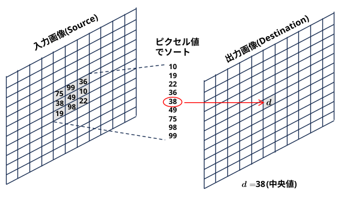
カーネルサイズ 3×3 のメディアン・フィルタ
お試しコード
・data/task_image_denoise/src/denoise_by_median_filter.py
・第一引数：ノイジー画像へのパス
・第二引数：フィルターサイズ (オプション。デフォルトは3)
・sキー押下で結果画像を保存～終了。それ以外のキー押下で保存せずに終了
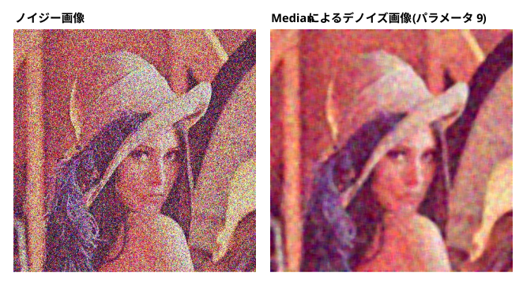
メディアン・フィルタは線形非分離なので、2回に分けて計算量を減らすことはできない。
中央値を求める際、毎回ソートし直すのではなく、ヒストグラムにピクセル値を出し入れすることで計算量を減らすことができる。(画像は値域が 0～255 などと、狭いため使えるテクニック)
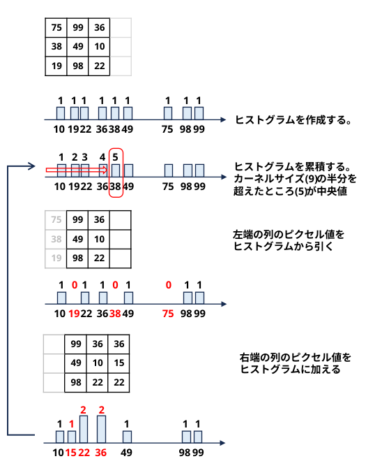
メディアン・フィルタは前景の角が欠ける、という欠点があり(Corner Rounding 問題)、Multi-Stage Median Filter、Adaptive Median Filter、
Bilateral Filter、Guided Filterなどが使われている。
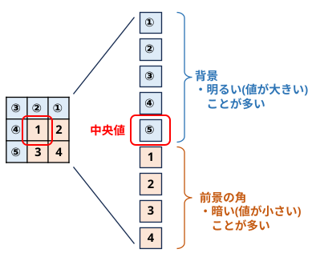
前景の角が背景に負ける。この状況はカーネルサイズを変えても変わらない。
-
バイラテラル・フィルタ (Bilateral Filter）
『Bilateral Filtering for Gray and Color Images』 (1998)
「ピクセル間の距離」 (定義域：ドメイン) だけでなく、「ピクセル値の近さ」 (値域：レンジ) も重みに加えた画期的な手法。これにより、エッジを綺麗に残したまま平滑化（Edge-preserving smoothing）できるようになった。
定義域（ドメイン) と値域 (レンジ) の両面 (bilateral) を考慮するので Bilateral Filter。
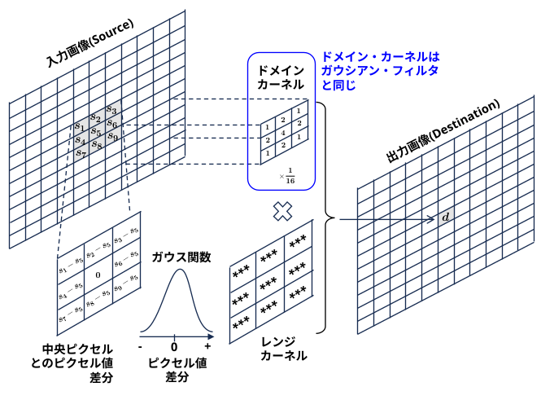
カーネルサイズ 3×3 のバイラテラル・フィルタ
お試しコード
・data/task_image_denoise/src/denoise_by_bilateral_filter.py
・第一引数：ノイジー画像へのパス
・第二引数：フィルターサイズ (オプション。デフォルトは3)
・sキー押下で結果画像を保存～終了。それ以外のキー押下で保存せずに終了
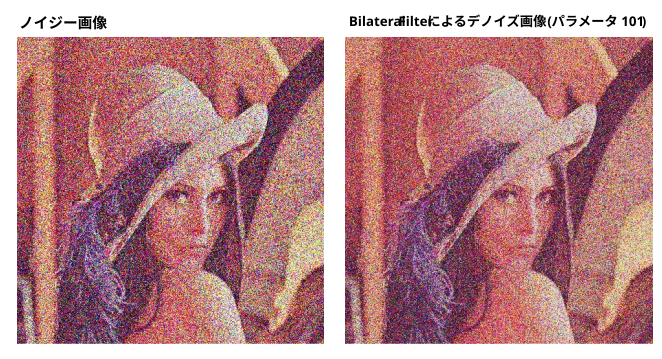
ノイズが大きいとレンジカーネルの係数が小さくなって効果が出ない
カーネル内に前景と背景のように、真の値が異なるものが入っても、レンジ・カーネルにより中央ピクセルとピクセル値の異なるピクセルは重みが小さくなり、ぼけは抑制される。
ノイズが大きい場合、レンジ・カーネルにより、デノイズ効果が下がってしまう。
-
クロス・バイラテラル・フィルタ (Cross Bilateral Filter / Joint Bilateral Filter)
『Digital Photography with Flash and No-Flash Image Pairs』 Joint Bilateral Filter (SIGGRAPH 2004)
『 Flash Photography Enhancement via Intrinsic Relighting』 Cross Bilateral Filter (SIGGRAPH 2004)
バイラテラル・フィルタのレンジ・カーネルの入力として、「入力画像」とは別に、エッジの位置や構造がはっきり分かっている「参照画像（ガイド画像）」をもう一枚用意し、その参照画像の情報を使って重み付けを行う。
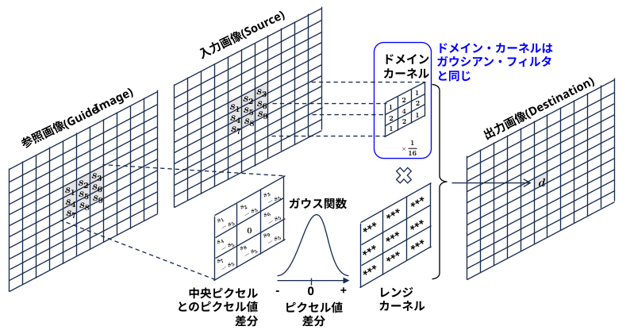
カーネルサイズ 3×3 のクロス・バイラテラル・フィルタ
参照画像の例：
・ フラッシュ画像： 色合いは不自然だがノイズが少ないフラッシュ画像を使って、
色合いは自然だがノイズの多いフラッシュ無し画像をデノイズする。
・ z-バッファ： 三次元的に離れているものは加重平均の重みを小さくして影響を抑える。
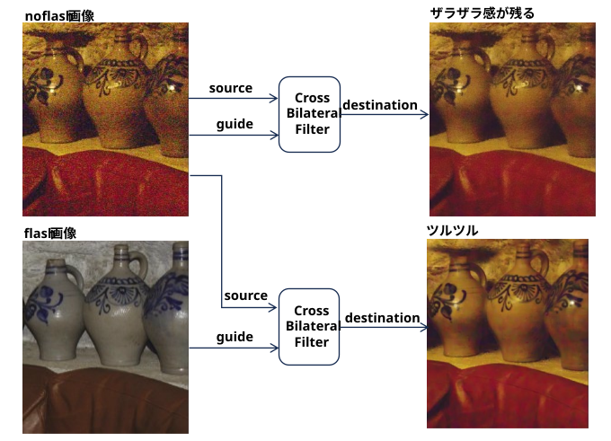
-
ガイデッド・フィルタ (Guided Filter）
『Guided Image Filtering』 (ECCV 2010, IEEE TPAMI 2013)
バイラテラル・フィルタの「計算量の大きさ」と、「勾配反転（グラデーションの乱れ）アーティファクト」という2つの弱点を改善したエッジ保存型平滑化フィルタ。
クロス・バイラテラル・フィルタと同様に参照画像を使うことができ、マット処理などにも使用できる。
フラッシュ画像の代わりに、ノイジー画像をガウシアン・フィルターでぼかした画像をガイド画像として使い、出力を次回のガイド画像として使うことを数回繰り返すことで地味に改善する場合がある。
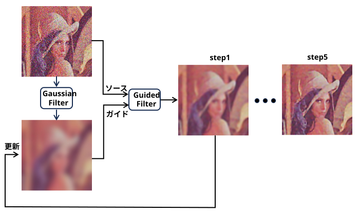
data/task_image_denoise/src/gauss_slider.py (入力画像)
data/task_image_denoise/src/guided_filter.py (入力画像) (ガイド画像)
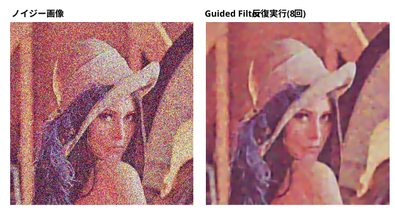
-
数理モデル・ドメイン変換
データを平均することでノイズを小さくする以外の、信号とノイズの性質の違いを利用したデノイズ手法。
-
Total Variation（TV正則化)
『Nonlinear total variation based noise removal algorithms』 (1992)
『Chambolle's Projection Algorithm』 (2004) ・・・ TV最小化を高効率に解くための双対最適化アルゴリズム
『Split Bregman Method』 (2009) ・・・ TVデノイジングの標準的な高速解法
自然画像の勾配 (ピクセル間差分) のヒストグラムは 「Heavy Tail (太いしっぽ)」 と言われる分布を持つが、ノイズがあると、この分布が変わる。
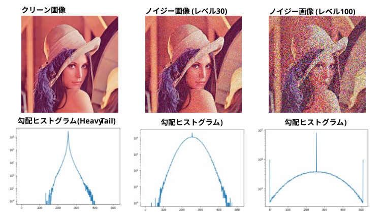
data/task_image_denoze/src/create_gradient_histrogram.py で作成した
画像の「勾配の絶対値の総和」を最小化する最適化問題としてノイズ除去を定式化。
「フィルタをかける（積分する）」から、「エネルギー関数を最小化する（最適化問題を解く）」へとシフトした。
エッジをシャープに残せるが、グラデーション部分が階段状になる（アーティファクト）問題がある。
お試しコード
・data/task_image_denoise/src/denoise_by_tv.py
・第一引数：ノイジー画像へのパス
・第二引数：重み (オプション。デフォルトは 0.05)
・sキー押下で結果画像を保存～終了。それ以外のキー押下で保存せずに終了
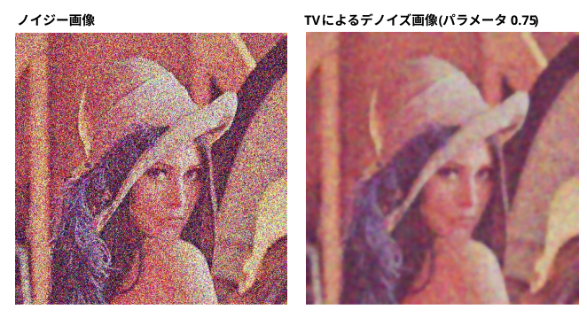
-
Wavelet Shrinkage
『Ideal spatial adaptation by wavelet shrinkage』 (1994) ・・・ 1次元信号のデノイズ
『Adapting to unknown smoothness via wavelet shrinkage』 (1995) ・・・ 二次元信号(画像)に応用
従来のフーリエ変換は画像全体の周波数成分しか見られず、どこにエッジ（輪郭）があるかという情報を失ってしまう。ウェーブレット変換は「位置」と「周波数」の両方を同時に解析できるため、画像のシャープなエッジを保ったまま、ノイズだけをきれいに分離・除去することに成功した。
ウェーブレット変換を行うと
・信号： 特定の少数のウェーブレット係数に集約され、その絶対値は大きくなる。
・ノイズ： 全体のウェーブレット係数に薄く広く分散し、その絶対値は小さくなる。
↓
・絶対値の小さい係数はノイズとみなしてゼロに近づけ、大きい係数だけを残して逆変換する。
↓
・デノイズされている。
ということらしい･･･
お試しコード
・data/task_image_denoise/src/denoise_by_wavelet_shrinkage.py
・第一引数：ノイジー画像へのパス
・sキー押下で結果画像を保存～終了。それ以外のキー押下で保存せずに終了
-
K-SVD
『 Image Denoising Via Sparse and Redundant Representations Over Learned Dictionaries』 (2006)
ノイズを含んだ画像そのものからその場で辞書を学習する方法（経時的・適応的）と、高品質な画像データベース（コーパス）であらかじめ学習した辞書を使用する方法の2つを提案し、前者が特に高い効果を発揮することを示した。
信号は、いくつかの基本的なパターン（辞書）をほんの少し組み合わせるだけで表現できるが、ノイズは綺麗に表現できない、という性質を利用して、ノイズだけを削ぎ落とす、らしい･･･
お試しコード
・data/task_image_denoise/src/denoise_by_k_svd.py
・第一引数：ノイジー画像へのパス
・sキー押下で結果画像を保存～終了。それ以外のキー押下で保存せずに終了
※ 辞書作成にかなり時間が掛かる･･･ (500x500程度のサイズの画像で数分程度)
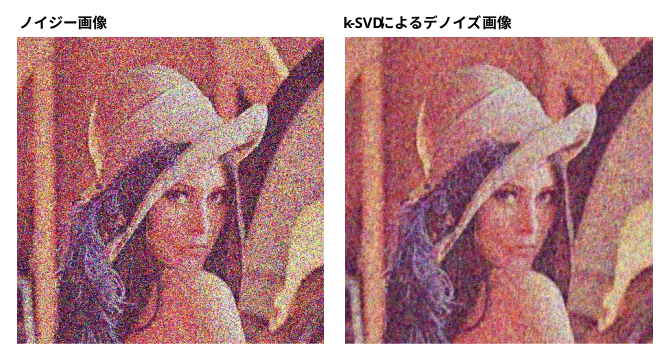
-
非局所・パッチベース
-
Non-Local Means
『A non-local algorithm for image denoising』 (CVPR 2005)
画像全体のすべての画素（非局所的・ノンローカル）を対象にし、注目画素の周辺のパッチ（小さな領域）の構造と、画像内の他の場所にあるパッチの構造の類似度（自己類似性）を計算し、類似度が高い画素の値を加重平均することで、エッジやテクスチャを鮮明に保ったままノイズを除去することに成功した。
お試しコード
・data/task_image_denoise/src/denoise_by_nlm.py
・第一引数：ノイジー画像へのパス
・第二引数： h (輝度成分の平滑化強度。オプション。デフォルト 30)
・第三引数： hColor (色成分の平滑化強度。オプション。デフォルト 20)
・第四引数： templateWindowSize (テンプレートウィンドウのサイズ。オプション。デフォルト 9)
・第五引数： searchWindowSize (探索ウィンドウのサイズ。オプション。デフォルト 41)
・sキー押下で結果画像を保存～終了。それ以外のキー押下で保存せずに終了
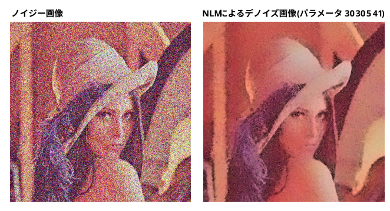
-
BM3D（Block-matching and 3D filtering)
『 Image Denoising by Sparse 3D Transform-Domain Collaborative Filtering』 (2007)
Non-local Means（自己類似性の利用） と、ウェーブレット変換などの周波数領域でのスパース（希薄）表現 を組み合わせた、非常に強力な画像ノイズ除去アルゴリズム。
-
1. ブロックマッチング（グループ化）
画像内から、注目したパッチと類似したパターンを持つパッチを複数見つけ出し、それらを重ね合わせて3次元の配列（3Dブロック）を作る。
-
2. 協調フィルタリング（Collaborative Filtering）
集めた3Dブロックに対して3次元の直交変換（離散コサイン変換やウェーブレット変換など）を施す。類似したブロックが集まっているため、ノイズ以外の画像本来のデータは特定の成分に集中（スパース化）する。ここで閾値処理を行うことで、画像の特徴を綺麗に残したままノイズだけを効果的に除去する。
お試しコード
・data/task_image_denoise/src/denoise_by_bm3d.py
・第一引数：ノイジー画像へのパス
・第二引数： ノイズレベル (オプション。デフォルト 20)
・sキー押下で結果画像を保存～終了。それ以外のキー押下で保存せずに終了
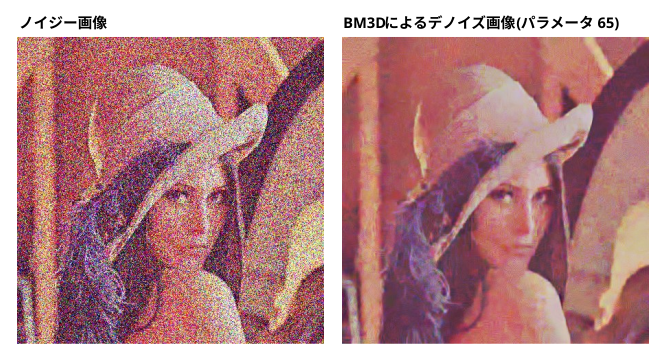
-
Deep Learning (CNN)ベース
膨大なデータから「ノイズとは何か」「綺麗な画像とは何か」をニューラルネットワークに直接学習させる。
-
DnCNN
『Beyond a Gaussian Denoiser: Residual Learning of Deep CNN for Image Denoising』 (2017)
クリアな画像を予測するのではなく、画像から「ノイズ成分だけを予測して引き算する（残差学習：Residual Learning）」手法とBatch Normalizationを組み合わせ、BM3D を大きく凌駕した。
-
Noise2Noise
『 Noise2Noise: Learning Image Restoration without Clean Data』 (ICML 2018)
正解となるクリア画像を一切使わずに、ノイズ画像同士のペアだけで学習を行っても、クリーンデータで学習したモデルと同等以上の性能でノイズ除去ができる」という事実を統計的なアプローチから証明し、画像復元分野に革命をもたらした。
この発見をきっかけに、のちにペアすら不要で 1 枚のノイズ画像のみから学習する「Noise2Void」 や 「Noise2Self」 といった自己教師あり学習（Self-Supervised Learning）のトレンドへと発展していくことになる。
『Noise2Void - Learning Denoising from Single Noisy Images』 (2019)
『 Noise2Self: Blind Denoising by Self-Supervision』 (2019)
-
MPRNet
『Multi-Stage Progressive Image Restoration』 (CVPR 2021)
複数のステージに分けて段階的に画像を復元するCNNアーキテクチャ。
Transformerベースの後継モデル「Restormer（CVPR 2022）」などに発展している。
-
Transformer・拡散モデルベース
CNN はカーネルの局所的な空間 （3x3 や 5x5 など） しか一度に捉えられず、画像全体の構造や、離れた場所にある同様のパターンを反映させるには、層を深く重ねる必要があった。
Transformer は自己注意機構により、画像内の離れたピクセル同士の依存関係を直接、モデリングすることが可能。これにより、テクスチャや規則的なパターンが画像全体に散らばっている場合でも、効果的にノイズと本来の構造を識別できる。
拡散モデルを用いた画像ノイズ除去は、「失われた情報や未知のノイズに対して、極めて高い品質のディテールを 『もっともらしく復元・生成』 できる圧倒的な表現力」にある。
-
DDPM
『Denoising Diffusion Probabilistic Models』 (2020)
『Diffusion Model for Generative Image Denoising』 (2023)
生成モデルを「画像デノイジング」タスクに特化させた。
-
SwinIR
『SwinIR: Image Restoration Using Swin Transformer』 (2021)
CNN が主流だった画像復元タスクに、Swin Transformerの機構を導入した。
-
Restomer
『Restormer: Efficient Transformer for High-Resolution Image Restoration』 (2022)
高解像度画像を効率的に処理する仕組みを組み込んだ。
・MDTA（Multi-Dconv Head Transposed Attention）
Attentionの計算量削減
・GDFN（Gated-Dconv Feed-Forward Network）
ゲート機構により不要な情報を抑制